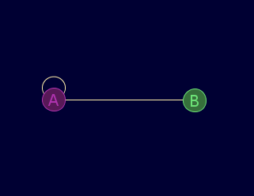
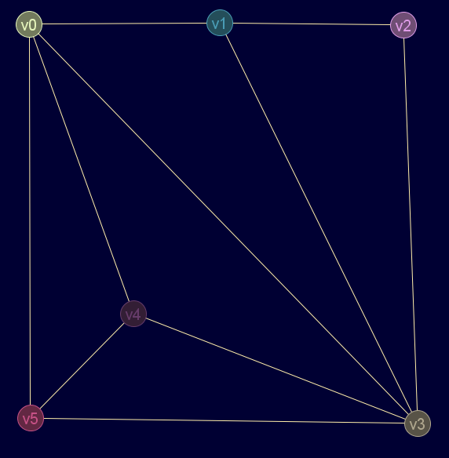
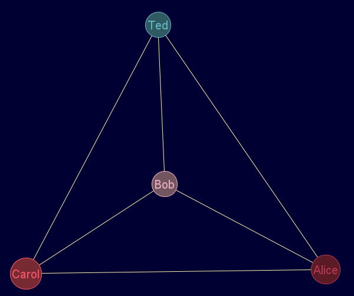
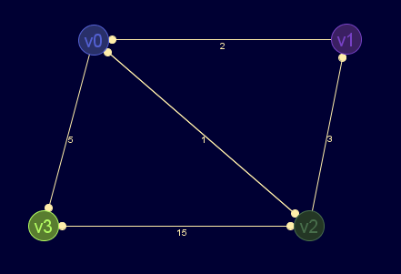

Descripción
Función constructora del pseudotipo Grafo.
Crea un nuevo grafo a partir de varios parámetros.
Si no se etiquetan los nodos, automáticamente se añaden como v0, v1, …
Los grafos ponderados, deben marcar las aristas no existentes como inf (infinito) en lugar de 0, incluso en la diagonal (la mayoría de autores usa 0 en la diagonal).
Cadena de entrada
gr_nuevo
Cadena de salida
GRAFO.nuevo
Uso
gr_nuevo(<matriz_ady>[,<etiquetas>][,<dirigido>[,<ponderado>[,<pseudografo>[,<multigrafo>[,<nodo_data>[,<arista_data>]]]]]])
| Parámetros | |||
|---|---|---|---|
| # | Parámetro | Descripción | Valor por defecto |
| 1 | matriz_ady | Matriz de adyacencia | |
| 2 | vector_etiquetas | Nombres de los nodos | 'var'+<indice_nodo> |
| 2|3 | dirigido | Flag de grafo dirigido | falso |
| 3|4 | ponderado | Flag de grafo ponderado | falso |
| 4|5 | pseudografo | Flag de pseudografo (grafo con bucles) | falso |
| 5|6 | multigrafo | Flag de multigrafo | falso |
| 6|7 | nodoData | Vector de información extra sobre cada nodo | nulo |
| 7|8 | aristaData | Matriz de información extra sobre cada arista | nulo |
Ejemplos
gr_nuevo([[1,1],[1,0]],['A','B'],falso,falso,verdadero,falso,nulo,nulo)
Diccionario: { 'etiquetas': ['A','B'] 'ady': [[1,1],[1,0]] 'esDirigido': falso 'esPonderado': falso 'esPseudografo': verdadero 'esMultigrafo': falso 'nodoData': '__null__' 'aristaData': '__null__' }
Salida JMEScriptGUI con visor de grafos v0.1:

gr_nuevo([[2,1,0,0,0],[1,0,0,0,1],[0,0,1,1,0],[0,0,1,0,2],[0,1,0,2,0]],falso,falso,verdadero,verdadero)
Diccionario: { 'etiquetas': ['v0','v1','v2','v3','v4'] 'ady': [[2,1,0,0,0],[1,0,0,0,1],[0,0,1,1,0],[0,0,1,0,2],[0,1,0,2,0]] 'esDirigido': falso 'esPonderado': falso 'esPseudografo': verdadero 'esMultigrafo': verdadero 'nodoData': '__null__' 'aristaData': '__null__' }
gr_nuevo([[0,1,0,1,1,1],[0,0,1,1,0,0],[0,1,0,1,0,0],[1,1,1,0,1,1],[1,0,0,1,0,1],[1,0,0,1,1,0]],falso)
Diccionario: { 'etiquetas': ['v0','v1','v2','v3','v4','v5'] 'ady': [[0,1,0,1,1,1],[0,0,1,1,0,0],[0,1,0,1,0,0],[1,1,1,0,1,1],[1,0,0,1,0,1],[1,0,0,1,1,0]] 'esDirigido': falso 'esPonderado': falso 'esPseudografo': falso 'esMultigrafo': falso 'nodoData': '__null__' 'aristaData': '__null__' }
Salida JMEScriptGUI con visor de grafos v0.1:

gr_nuevo([[0,1,1,1],[1,0,1,1],[1,1,0,1],[1,1,1,0]],['Alice','Bob','Carol','Ted'])
Salida JMEScriptGUI con visor de grafos v0.1:

gr_nuevo([[inf,inf,1,5],[2,inf,inf,inf],[1,3,inf,1],[inf,inf,15,inf]],verdadero,verdadero)
Diccionario: { 'etiquetas': ['v0','v1','v2','v3'] 'ady': [[Infinity,Infinity,1,5],[2,Infinity,Infinity,Infinity],[1,3,Infinity,1],[Infinity,Infinity,15,Infinity]] 'esDirigido': verdadero 'esPonderado': verdadero 'esPseudografo': falso 'esMultigrafo': falso 'nodoData': '__null__' 'aristaData': '__null__' }
Salida JMEScriptGUI con visor de grafos v0.1:

Desde / Última modificación
v0.6.2.0